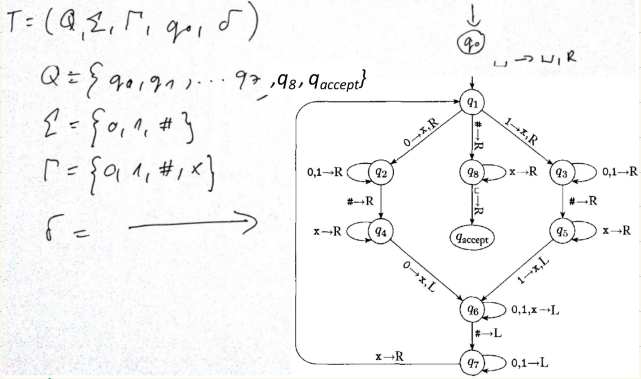
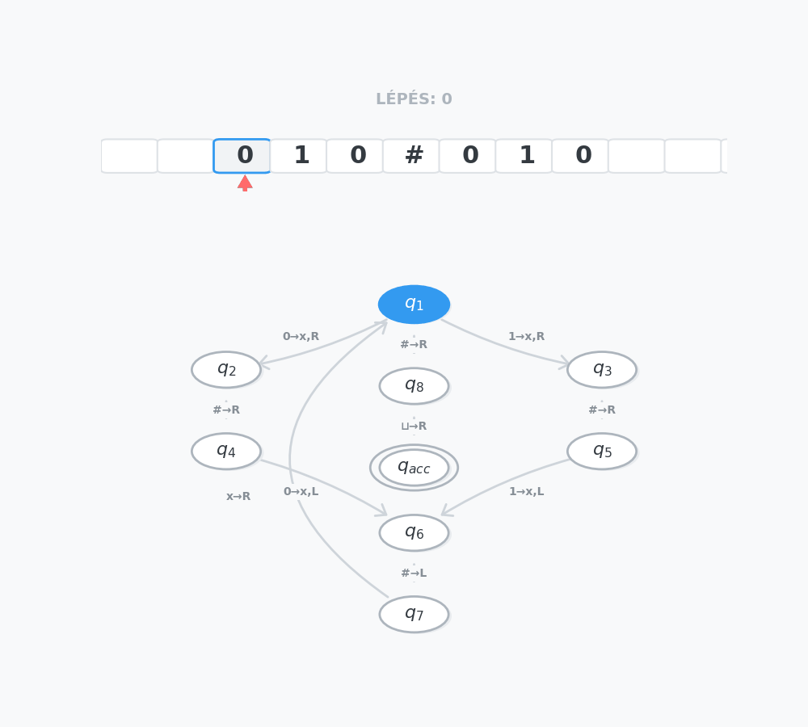

Az egyenletrendszer jobboldali vektora és ismeretlen vektora
b=b1b2⋮bm∈Rmeˊsx=x1x2⋮xn∈Rn
A lineáris egyenletrendszer mátrixos alakja: Ax=b
Lineáris egyenletrendszerek megoldhatósága
Alapelv: Egy lineáris egyenletrendszer megoldható, ha létezik legalább egy olyan x vektor, amely kielégíti az egyenletet.
A megoldások száma alapján egy egyenletrendszer háromféle lehet:
Határozott: Pontosan 1 megoldása van.
Határozatlan: Végtelen sok megoldása van.
Ellentmondásos: Nem létezik (nincs) megoldása.
Vektortér-szemlélet (Oszlopvektorok szerinti megközelítés)
Egy lineáris egyenletrendszer pontosan akkor oldható meg, ha a b vektor (az eredményvektor) előállítható az A mátrix oszlopvektorainak lineáris kombinációjaként. Más szóval: a b vektor benne van az A oszlopvektorai által felfeszített térben.
Egyértelmű előállítás (Határozott rendszer): Ha az A mátrix oszlopvektorai lineárisan függetlenek, akkor a b vektor pontosan egyféleképpen állítható elő, így az egyenletrendszernek pontosan 1 megoldása van.
Többféle előállítás (Határozatlan rendszer): Ha az A mátrix oszlopvektorai lineárisan függőek, akkor a b vektor előállítása nem egyértelmű, így a rendszernek végtelen sok megoldása van.
Mátrix rangja
Definíció: Egy mátrix rangja alatt a benne lévő lineárisan független sor- vagy oszlopvektorok maximális számát értjük. (Fontos matematikai tétel, hogy egy mátrix sorrangja és oszloprangja mindig megegyezik, így egyszerűen csak a mátrix rangjáról beszélünk).
Rangkritérium
Alapelv: Ez a tétel adja meg a legbiztosabb módszert egy egyenletrendszer megoldhatóságának vizsgálatára. A tételben szereplő (A∣b) az úgynevezett kibővített mátrix, amelyet úgy kapunk, hogy az A alapmátrix mellé utolsó oszlopként odaírjuk a b eredményvektort.
Egy lineáris egyenletrendszer pontosan akkor oldható meg, ha az alapmátrix rangja megegyezik a kibővített mátrix rangjával: Rang(A)=Rang(A∣b)
(Szemléletes magyarázat: Ha a rang nem nő meg a b vektor hozzáadásával, az pontosan azt jelenti, hogy a b vektor nem hoz be új dimenziót, azaz benne van az eredeti oszlopvektorok által felfeszített térben).
Döntési eljárás (legyen n az ismeretlenek száma):
Nincs megoldás (Ellentmondás):
Ha a kibővített mátrix rangja nagyobb, mint az alapmátrixé. Rang(A)=Rang(A∣b)
Pontosan 1 megoldás (Határozott):
Ha a két rang megegyezik, és maximális (egyenlő az ismeretlenek számával). Rang(A)=Rang(A∣b)=n
Végtelen sok megoldás (Határozatlan):
Ha a két rang megegyezik, de nem maximális (kisebb, mint az ismeretlenek száma). Rang(A)=Rang(A∣b)<n
Lineáris egyenletrendszer megoldáshalmaza
Egy lineáris egyenletrendszert a b vektor értéke alapján két fő kategóriába sorolhatunk: homogén és inhomogén rendszerekre.
Homogén lineáris egyenletrendszer (Ax=0)
Definíció: Egy lineáris egyenletrendszer homogén, ha a b vektor minden eleme nulla (b=0). Mátrixos alakja: Ax=0.
A triviális megoldás:
Egy homogén egyenletrendszernek sosem ellentmondásos. A nullvektor mindig megoldása a rendszernek, hiszen bármilyen A mátrixot szorzunk nullvektorral, az eredmény nullvektor lesz. Ezt nevezzük triviális megoldásnak.
Mikor van a triviálistól különböző megoldása?
Egy homogén rendszernek pontosan akkor van a csupa nullától eltérő (nem triviális) megoldása, ha az A mátrix oszlopvektorai lineárisan függőek. Ilyenkor végtelen sok megoldás létezik.
A megoldástér (Alterek):
Ha egy valós együtthatós homogén rendszernek végtelen sok megoldása van, akkor ezek a megoldásvektorok egy úgynevezett megoldásteret (egy alteret) alkotnak az Rn térben (ahol n az ismeretlenek száma).
Dimenzió-tétel: Ennek a megoldástérnek a dimenziója: d=n−Rang(A). (Ez a dimenziószám mutatja meg, hogy hány darab szabad paramétert (pl. t1,t2) kell bevezetnünk a végtelen sok megoldás felírásához).
Inhomogén lineáris egyenletrendszer (Ax=b)
Definíció: Egy lineáris egyenletrendszer inhomogén, ha a b vektor nem a nullvektor (van benne legalább egy nem nulla elem).
A megoldáshalmaz szerkezete:
Ha egy inhomogén Ax=b rendszer megoldható, akkor a megoldások szerkezete mindig felírható az alábbi összegként: x=x∗+y
A képlet elemei:
x∗: Az inhomogén rendszer egyetlen, tetszőlegesen rögzített megoldása.
y: Az inhomogén rendszerhez tartozó (az abból származtatott) Ax=0homogén rendszer összes lehetséges (általános) megoldása.
Példa az x=x∗+y felbontásra
Adott az alábbi inhomogén egyenletrendszer (2 egyenlet, 3 ismeretlen):
x1+x2+x3=3
x1−x2=1
1. Lépés: Partikuláris megoldás (x∗)
Keressünk egyetlen tetszőleges számhármast, ami igazzá teszi mindkét egyenletet!
Látjuk, hogy a 2. egyenletben a különbség 1. Legyen x1=1 és x2=0.
Ezt behelyettesítve az 1. egyenletbe: 1+0+x3=3⟹x3=2.
Egy lehetséges kezdőpont tehát: x∗=102
2. Lépés: Homogén megoldás (y)
Nullázzuk le az egyenletek jobb oldalát (Ax=0), és oldjuk meg így is:
x1+x2+x3=0
x1−x2=0⟹x1=x2
Mivel végtelen sok megoldás van, bevezetünk egy t szabad paramétert.
Legyen x2=t. Ekkor x1=t is igaz.
Helyettesítsük be az 1. egyenletbe: t+t+x3=0⟹x3=−2t.
A homogén rendszer általános megoldása: y=tt−2t=t⋅11−2
3. Lépés: A teljes megoldáshalmaz (x=x∗+y)
A tétel alapján a teljes megoldáshalmazt a rögzített kezdőpont és a homogén irányvektor összege > adja meg: x=102+t⋅11−2 (Ahol t∈R bármilyen tetszőleges valós szám).
Egyenletrendszer megoldása Gauss-eliminációval
Alapelv: Az ekvivalens átalakítások nem változtatják meg a lineáris egyenletrendszer megoldáshalmazát. A cél, hogy ezekkel a lépésekkel a kibővített mátrixban a főátló alatti elemeket kinullázzuk (felső háromszögmátrixot, azaz lépcsős alakot kapjunk).
Megengedett átalakítások:
Egyenlet (sor) szorzása nem nulla skalárral.
Egy egyenlethez (sorhoz) hozzáadni egy másik egyenlet skalárszorosát.
Egyenletek (sorok) sorrendjének megváltoztatása.
Elhagyni olyan egyenletet, amely egy másik egyenlet skalárszorosa (vagy csupa nulla).
Ismeretlenek felcserélése együtthatóikkal együtt minden egyenletben (ez az alapmátrixban oszlopcserét jelent, de figyelni kell a változók sorrendjének adminisztrálására!).
Megoldás leolvasása a lépcsős alakból
A kinullázás után visszahelyettesítéssel adódnak a megoldások.
Ellentmondás (nincs megoldás): Ha van olyan sor, ahol a bal oldal csupa nulla, de a jobb oldal nem nulla (0…0∣c, ahol c=0).
Határozott (1 megoldás): Ha az eljárás végén n darab (az ismeretlenek számával megegyező) nem csupa nulla sor marad.
Határozatlan (végtelen sok megoldás): Ha az eljárás végén kevesebb mint n darab nem csupa nulla sor marad (és nincs ellentmondás).
Példa Gauss-eliminációra: 2−4−2145−112II+2⋅I20−2165−1−12III+I200166−1−11III−II200160−1−12
Mátrix rangja és Determinánsa Gauss-eliminációval
A Gauss-elimináció lépcsős alakja sok mindent elárul a mátrixról.
1. Mátrix rangja:
A mátrix rangját a Gauss-elimináció végén kapott nem csupa nulla sorok száma adja meg.
A mátrix rangját nem változtatja meg:
Sor szorzása nem nulla skalárral.
Egy sorhoz hozzáadni egy másik sor skalárszorosát.
Sorok sorrendjének felcserélése.
2. Mátrix determinánsa:
Négyzetes mátrixok esetén, ha eljutottunk a felső háromszögmátrix (lépcsős) alakig, a determináns egyszerűen a főátlóban lévő elemek szorzata.
Hogyan változik a determináns az átalakítások során?
Nem változik: Ha egy sorához hozzáadjuk egy másik sor skalárszorosát (ez a leggyakoribb lépés).
(−1)-szeresére változik: Ha két sort megcserélünk egymással (minden sorcsere megfordítja az előjelet).
c-szeresére változik: Ha egy sort megszorzunk egy c konstanssal (ezt észben kell tartani a végeredménynél).
Mátrix inverze és Műveletigény
Mátrix inverzének kiszámítása (Gauss-Jordan elimináció):
Legyen A∈Rn×n egy invertálható mátrix, inverze X (azaz A−1). Az inverz meghatározása valójában n darab szimultán lineáris egyenletrendszer megoldását jelenti. Az (A∣E) mátrixból indulunk (ahol E az egységmátrix), és addig végezzük a Gauss-eliminációt (felfelé is kinullázva az elemeket és a főátlót 1-re normálva), amíg a bal oldalon meg nem kapjuk az egységmátrixot: (A∣E)→⋯→(E∣A−1)
A Gauss-elimináció műveletigénye (Aszimptotikus komplexitás):
Az A alapmátrix felső háromszögalakra hozása: ≈3n3+O(n2) lebegőpontos művelet.
A b vektor átalakítása és a visszahelyettesítés: ≈n2 művelet.
Mátrixfelbontások
1. LU-felbontás (Lower-Upper)
Sorcsere nélküli Gauss-elimináció, amely egy A mátrixot egy alsó (L) és egy felső (U) háromszögmátrix szorzatára bontja: A=L⋅U.
Tárigény előnye: Mivel a Gauss-elimináció során az U mátrix alatt csupa nulla keletkezik ("felesleges információ"), ebbe az üresen maradó alsó háromszögbe letárolhatjuk azokat a szorzókat (lij), amelyekkel a kinullázást végeztük. Ebből azonnal megkapjuk az L mátrixot (amelynek főátlója csupa 1).
Mire jó?: Ha az Ax=b egyenletet sok különböző b vektorra kell megoldani, de az A mátrix fix. Az Ax=b⇒LUx=b helyettesítéssel a feladat két gyors visszahelyettesítésre (egy Ly=b és egy Ux=y) bomlik. Az LU-felbontást csak egyszer, az elején kell elvégezni.
Példa LU-felbontásra: −22−4−13−104−1−5l21=−1l31=2−200−12−843−13l32=−4−200−12043−1=U
A kinullázó szorzókból (lij) felépítjük az L mátrixot (főátlóban 1-esekkel):
L=1−1201−4001eˊsU=−200−12043−1
2. PLU-felbontás (Permutációs LU)
A sima LU-felbontás elakad, ha a Gauss-elimináció során egy főátlóbeli elem (a generáló elem / pivot) pontosan 0 lesz, mert nullával nem tudunk osztani. Ilyenkor sorcserére van szükség. Ezt kezeli a P (Permutációs) mátrix.
A felbontás alakja: P⋅A=L⋅U (Ahol P az egységmátrix sorcserélt változata, ami nyilvántartja, hogyan cseréltük meg az eredeti A mátrix sorait).
3. Cholesky-felbontás
A Cholesky-felbontás az LU-felbontás egy speciális, rendkívül hatékony esete, amit csak szimmetrikus, pozitív definit mátrixoknál lehet alkalmazni.
A felbontás alakja: Mivel a mátrix szimmetrikus, nincs szükség külön U mátrixra. Az A mátrix felírható egy L alsó háromszögmátrix és annak transzponáltjának szorzataként: A=L⋅LT
Előnyei:
Memóriatakarékos: Csak az L mátrixot kell kiszámolni és eltárolni.
Gyors: A műveletigénye a Gauss/LU-felbontásnak pontosan a fele (kb. 6n3).
Numerikusan stabil: Matematikai okokból sosem kell sorcserét alkalmazni (nincs szükség P mátrixra).
Példa Cholesky-felbontásra:
Adott a szimmetrikus A mátrix. Olyan L mátrixot keresünk, amelyre A=L⋅LT: A=412−161237−43−16−4398⇒L=26−8015003
_(Ellenőrzésképp: Az L mátrix első sorát önmagával skalárisan szorozva: 2⋅2=4, ami pont A11. A második sort az elsővel szorozva 6⋅2=12, ami pont A21, és így tovább az explicit képletek alapján)._
7.2. Turing-gépek, algoritmikus eldönthetőség, eldönthetetlen problémák, rekurzív és rekurzívan felsorolható nyelvek. Generatív grammatikák és nevezetes nyelvosztályok, a Chomsky hierarchia.
A Turing-gép
Az alapkoncepció:
A Turing-gép egy absztrakt matematikai modell. Egy olyan elméleti számítógépként fogható fel, amelynek nincs hagyományos memóriája, helyette egy végtelenül hosszú, cellákra osztott szalagot használ az adatok tárolására. Ezen a szalagon mozog egy olvasó/író fej balra vagy jobbra. A gép mindig csak egyetlen cellát lát. A belső állapotától és az éppen olvasott jeltől függően határozza meg, hogy mit írjon az adott cellába, merre lépjen, és mi legyen a következő állapota. A cél egy speciális "elfogadó" állapot elérése.
Formális definíció:
A Turing-gép egy T=(Q,Σ,Γ,q0,δ) matematikai struktúra, ahol:
Q: A lehetséges belső állapotok véges halmaza.
Σ: Bemeneti ábécé (azok a szimbólumok, amelyekből a vizsgálandó szó állhat, pl. {0,1}).
Γ: Szalagábécé. Tartalmazza a bemeneti ábécét, a Δ (üres cella) jelet, és a gép saját kiegészítő/segédjeleit (Σ⊂Γ).
q0: A kezdőállapot (q0∈Q). A működés innen indul.
δ: Az átmenetfüggvény (a gép "programkódja").
Formálisan: δ:Q×Γ→(Q∪{qacc,qrej})×Γ×{L,R,S} Jelentése: (Jelenlegi állapot, Olvasott jel) → (Új állapot, Új jel, Fej mozgásának iránya: Left/Right/Stay).
Működés és Elfogadás:
A gép működése konfigurációk (pillanatképek) sorozatával írható le. Egy konfiguráció megmutatja a szalag tartalmát, a fej pozícióját és a gép aktuális állapotát. Formátuma például (u,q,v), ahol u a fejtől balra lévő jelsorozat, v a fejtől jobbra lévő (az aktuális cellával kezdődő) jelsorozat, q pedig az aktuális állapot.
Egy T Turing-gép akkor fogad el egy w∈Σ∗ szót, ha létezik olyan c1,c2,…,ck konfiguráció-sorozat, amelyre az alábbiak teljesülnek:
Kezdő konfiguráció: c1=(q0,Δw) (A gép a q0 állapotban van, és elkezdi olvasni a bemeneti szót).
Lépések: ci⇒ci+1(0≤i≤k−1) (Minden lépés az átmenetfüggvény szabályainak megfelelően történik).
Végállapot: A ck egy elfogadó konfiguráció, vagyis a gép eléri a qacc (elfogadó) állapotot. Pld: ck=(u,qacc,v).
L(T)-vel jelöljük az elfogadott szavakból álló nyelvet (az összes olyan szó halmazát, amelyre a gép elfogadó állapotban áll meg).
Elutasítás:
Ha a gép nem fogad el egy szót, az kétféleképpen végződhet:
Szabályosan megáll egy elutasító (qrej) vagy egy nem-elfogadó állapotban.
Végtelen ciklusba kerül (a gép a végtelenségig lépked anélkül, hogy valaha is megállna).
Példa a Turing-gép működésére: L={w#w∣w∈{0,1}∗}
Ez a Turing-gép olyan szavakat fogad el, ahol egy tetszőleges (nullákból és egyesekből álló) szó megismétlődik egy # elválasztó karakter után. (A gép logikája: a # előtti első karaktert megjelöli, átmegy a # túloldalára, megkeresi az első jelöletlen karaktert, és ellenőrzi, hogy a kettő megegyezik-e. Ezt ismétli végig).

Szemléltetés (010#010 szó elfogadása):

Bővített Turing-gép modellek
A klasszikus Turing-gépet többféleképpen is tovább lehet gondolni, azonban ezen módosítások egyike sem növeli meg a gép "számítási erejét" (azaz nem tudnak olyan problémát megoldani, amit az eredeti gép ne tudna).
1. Többszalagos Turing-gépek
Kiterjesztett modell, amelyben a gép k darab szalaggal rendelkezik, és mindegyikhez külön író/olvasó fej tartozik. Kifejezetten praktikus és gyors például két szó ekvivalenciájának (egyezőségének) megállapítására.
Ekvivalencia Tétel: Minden k-szalagos T1 Turing-géphez létezik olyan hagyományos, 1-szalagos T2 Turing-gép, amelyre igaz, hogy L(T1)=L(T2). (A többszalagos gép csupán gyorsabb/kényelmesebb, de számítási szempontból nem erősebb).
2. Nemdeterminisztikus Turing-gépek
Olyan gépek, ahol egy adott állapotból és olvasott jelből az átmenetfüggvény nem csak egy, hanem többféle lehetséges folytatást (lépést) is megenged.
Ekvivalencia Tétel: Minden nemdeterminisztikus Turing-gép átalakítható determinisztikussá úgy, hogy az általa elfogadott nyelv nem változik.
3. Univerzális Turing-gép
Egy olyan speciális Turing-gép, amely képes tetszőleges másik Turing-gép működését szimulálni. Bemenetként megkapja a szimulálandó gép leírását (a szabályrendszerét) és az eredeti bemeneti szót, majd végrehajtja rajta a lépéseket. (Ez a mai általános célú, programozható számítógépek elméleti alapja).
A Turing-gép mint számítási modell
A Turing-gép a számítástudományban egy általános célú, programozható, matematikailag teljesen precíz számítási modell. Bármit is írunk ma Pythonban, C++-ban vagy futtatunk egy szuperszámítógépen, az elméletben egy Turing-gépre vezethető vissza.
A Church–Turing-tézis
Ez a tétel az informatika egyik legfontosabb alapelve, amely összeköti az intuitív "algoritmus" fogalmát a Turing-gépekkel:
Egy probléma pontosan akkor oldható meg algoritmussal (mechanikus eljárással) véges sok lépésben, ha megoldható Turing-géppel is.
Következmény (A korlát): Ha egy problémát egy Turing-géppel nem lehet megoldani, akkor arra egyáltalán nincs és nem is létezhet semmilyen algoritmus vagy mechanikus eljárás, függetlenül attól, hogy milyen modern számítógépet használunk.
Generatív grammatika
Alapelv: A generatív grammatika egy olyan matematikai szabályrendszer, amely pontosan meghatározza, hogyan lehet egy adott formális nyelv összes helyes szavát (és csakis azokat) "legenerálni" vagy levezetni.
Formálisan: Egy grammatika egy G=(N,Σ,S,P) matematikai négyes, ahol:
N (Nemterminális ábécé): A segédszimbólumok vagy változók véges halmaza. Ezek az átmeneti betűk, amiket a levezetés során használunk, de a végső szóban már nem szerepelhetnek (általában nagybetűkkel jelöljük: S,A,B).
Σ (Terminális ábécé): A tényleges nyelv ábécéje. Ezekből a betűkből állnak a kész szavak (általában kisbetűkkel vagy számokkal jelöljük: a,b,0,1). Fontos: N és Σ halmazoknak nem lehet közös eleme!
S (Kezdőszimbólum): S∈N. Ebből az egyetlen speciális segédszimbólumból indul ki minden szó generálása.
P (Helyettesítési szabályok / Produkciók): A szabályok véges halmaza, amelyek megmondják, mit mire lehet átírni. (Például: S→aSb, vagy S→λ, ahol λ az üres szót jelöli).
Közvetlen levezethetőség
Adott egy G grammatika. Azt mondjuk, hogy egy u szó közvetlenül levezethető egy v szóból (jelölése: v⇒u), ha a v szóban találunk egy α részt, amit egy létező α→β szabály alapján kicserélünk β-ra, és így kapjuk meg u-t.
Képlettel: v=v1αv2 és u=v1βv2. (Ahol v1 és v2 az érintetlenül hagyott környezet).
Példa a közvetlen levezethetőségre:
Legyen v=aSb.
Alkalmazzuk az S→aSb szabályt (itt α=S, β=aSb, v1=a, v2=b).
Ekkor a kapott új szó: u=aaSbb.
Tehát: aSb⇒aaSbb (közvetlenül levezethető).
Levezetés (Lépések sorozata)
Szavak egy w1,w2,…,wn sorozatára azt mondjuk, hogy a wn levezetése w1-ből (jelölése: w1⇒∗wn), ha minden lépésben alkalmaztunk egy érvényes szabályt, azaz: w1⇒w2⇒⋯⇒wn
A csillag (∗) azt jelenti: "levezethető 0 vagy több lépésben".
Példa a levezetésre:
Vezessük le az aabb szót a kezdőszimbólumból (S)!
Szabályok: S→aSb, S→λ
S⇒aSb
aSb⇒aaSbb
aaSbb⇒aabb
A teljes sorozat: S⇒aSb⇒aaSbb⇒aabb.
Röviden leírva: S⇒∗aabb (Az aabb levezethető S-ből).
A generált nyelv (L(G))
Egy G grammatika által generált nyelv azoknak, és csak is azoknak a szavaknak a halmaza, amelyek kizárólag terminális jelekből állnak (nincs bennük nagybetű), és levezethetőek a kezdőszimbólumból (S). L(G)={w∈Σ∗∣S⇒∗w}
Példa a generált nyelvre:
Milyen nyelvet generál az előző gramatika?
Ha rögtön az S→λ szabályt alkalmazzuk: S⇒λ (üres szó).
Ha egyszer az elsőt, majd a másodikat: S⇒aSb⇒ab.
Ha kétszer az elsőt, majd a másodikat: S⇒aSb⇒aaSbb⇒aabb.
Látható, hogy ez a nyelv az L(G)={anbn∣n≥0} nyelv (ahol pontosan ugyanannyi a van a szó elején, mint amennyi b a szó végén).
Nevezetes nyelvosztályok
A formális nyelveket aszerint csoportosítjuk (osztályozzuk), hogy mennyire "bonyolultak", azaz milyen típusú elméleti számítógépre (automatára) van szükség a szavaik felismeréséhez. A legegyszerűbbtől a legbonyolultabb felé haladva az alábbi osztályokat különböztetjük meg:
Reguláris nyelvek
Definíció: Olyan nyelvek, amelyek véges automatával elfogadhatóak.
Gyakorlati jelentés: Nincs memóriájuk, nem tudnak számolni. Csak egyszerű mintákat ismernek fel (pl. "tartalmazza a 'cica' szót", vagy "csak 0-kból áll"). A programozásban a reguláris kifejezések (Regex) alapulnak ezen.
Környezetfüggetlen nyelvek
Definíció: Olyan nyelvek, amelyek veremautomatával (Pushdown Automata) elfogadhatóak.
Gyakorlati jelentés: Itt már van egy egyszerű (LIFO - utolsónak be, elsőnek ki) memóriája a gépnek, amivel tud számolni, de csak korlátozottan. Tökéletes például a párosított zárójelek ellenőrzésére: ((())). A legtöbb modern programozási nyelv (C++, Java, Python) szintaktikája környezetfüggetlen nyelvtanra épül.
A következő két osztályhoz már a legokosabb gép, a Turing-gép szükséges. Itt a fő kérdés már nem az, hogy a gép meg tudja-e oldani a feladatot, hanem az, hogy garantáltan befejezi-e.
Rekurzív (Eldönthető) nyelvek
Definíció: Egy L nyelv rekurzív, ha létezik egy olyan T Turing-gép, amely MINDEN bemeneten megáll (véges időn belül).
Ha a bemeneti szó w∈L (helyes szó), a gép elfogadó állapotban áll meg.
Ha a bemeneti szó w∈/L (hibás szó), a gép elutasító állapotban áll meg.
Terminológia: Ha létezik ilyen gép, akkor azt mondjuk, hogy a T gép eldönti az L nyelvet. A probléma mindig garantáltan, biztosan megoldható.
Rekurzívan felsorolható (Felismerhető) nyelvek
Definíció: Egy L nyelv rekurzívan felsorolható, ha létezik olyan T Turing-gép, amely az érvényes w∈L szavakra biztosan megáll és elfogadja azokat. Azonban a w∈/L (hibás) szavak esetén két dolog történhet:
Vagy szabályosan megáll és elutasít.
Vagy egyáltalán nem áll meg (végtelen ciklusba esik).
Terminológia: Ha L=L(T) igaz egy T gépre, akkor azt mondjuk, hogy a T gép elfogadja (vagy felismeri) az L nyelvet, de nem feltétlenül dönti el!
A nagy különbség: Rekurzív vs. Rekurzívan felsorolható
A gyakorlatban, ha elindítunk egy rekurzívan felsorolható Turing-gépet egy hibás szóval, és az már 10 perce (vagy 10 éve) fut, sosem tudhatjuk biztosan, mi történik.
Lehet, hogy csak nagyon bonyolult a számítás, és 11 perc múlva megáll, hogy kimondja: "NEM".
De az is lehet, hogy a gép végtelen ciklusba került, és az idők végezetéig futni fog.
Tehát:
A rekurzív (eldönthető) gépek mindig, 100% bizonyossággal adnak egy végső IGEN vagy NEM választ.
A rekurzívan felsorolható gépek IGEN válasza biztos, de a NEM válasz helyett sokszor csak a végtelen némaságot kapjuk (nincs garancia a megállásra).
Chomsky-hierarchia
Míg az előző felosztás a felismerő automatákra fókuszált, a Chomsky-hierarchia ugyanezeket a nyelveket a generatív nyelvtanuk (a szabályaik szigorúsága) alapján rendezi egymásba ágyazott halmazokba.
A hierarchia (matematikai részhalmazok):REG⊂CF⊂CS⊆RE
Reguláris nyelvek (REG)
Szabályok (Produkciók): A legszigorúbb. A bal oldalon csak 1 nemterminális (Nagybetű) állhat. A jobb oldalon maximum 1 terminális (kisbetű), amit maximum 1 nemterminális követhet. (Pl.: A→aB, vagy A→a).
Felismerő gép: Véges automata.
Formális példa:a∗b∗ (tetszőleges számú 'a' és 'b').
Környezetfüggetlen nyelvek (CF)
Szabályok: Bal oldalon 1 nemterminális állhat, de az környezetétől függetlenül bármilyen hosszú és összetételű szóra átírható. (Pl.: A→aAbc).
Felismerő gép: Veremautomata.
Formális példa:anbn (pontosan ugyanannyi 'a', mint 'b'). A verem képes az egyszeres párosításra.
Környezetfüggő nyelvek (CS - Context-Sensitive)
Szabályok: Egy szimbólumot csak egy megadott környezetben lehet átírni (αAβ→αγβ). Szigorú megkötés, hogy a levezetés során a szó hossza nem csökkenhet (a jobb oldal mindig legalább olyan hosszú, mint a bal).
Felismerő gép: Lineárisan korlátos automata (LBA)
Formális példa:anbncn (hármas feltétel, amit a verem már elfelejtene, de az LBA végig tudja ellenőrizni a szalagon).
Rekurzívan felsorolható nyelvek (RE)
Szabályok: Semmilyen megkötés nincs. Bármilyen karaktersorozat szabadon átírható egy másikra (α→β), és a szó akár rövidülhet is.
Felismerő gép: Turing-gép.
Formális példa: Bármilyen kiszámítható probléma vagy algoritmus.
Algoritmikus eldönthetőség és Eldönthetetlen problémák
Eldöntési problémák: Olyan matematikai vagy informatikai problémák, amelyekre egyértelmű IGEN vagy NEM válasz adható.
Matematikailag: Adott egy M⊆N részhalmaz (egy tulajdonság). A kérdés az, hogy egy tetszőleges n számra igaz-e, hogy n∈M.
Nagyon fontos különbséget tenni a kettő között (ez a rekurzívan felsorolható és a rekurzív nyelvek közötti különbség alapja):
1. Elfogadás (Felismerés)
Egy Turing-gép elfogadja az M halmazt (a problémát), ha:
Amikor a bemenet helyes (n∈M), a gép véges időn belül megáll és elfogadó állapotba kerül ("IGEN").
Amikor a bemenet hibás (n∈/M), a gép vagy megáll egy nem elfogadó állapotban ("NEM"), vagy végtelen ideig "dolgozik" (sosem áll meg).
2. Eldöntés (A tökéletes megoldás)
Egy probléma akkor algoritmikusan eldönthető, ha létezik rá olyan Turing-gép, ami minden bemeneten megáll.
A Church–Turing-tézis kimondja: az algoritmikusan megoldható feladatok pontosan azok, amelyek Turing-géppel eldönthetőek.
Ezekhez a feladatokhoz a hierarchiában a rekurzív nyelvek tartoznak.
Eldönthetetlen problémák és a Megállási probléma (Halting Problem)
Vannak olyan problémák, amelyeket matematikailag lehetetlen egy általános algoritmussal megoldani. A leghíresebb ilyen az Alan Turing által bizonyított Megállási probléma.
A probléma definíciója: Lehetséges-e írni egy olyan általános elemző programot, ami kap egy tetszőleges másik programkódot és egy bemenetet, és megmondja róla, hogy az a program le fog-e futni és megáll-e, vagy végtelen ciklusba fagy?
A válasz: Nem lehetséges. Nincs és nem is létezhet ilyen algoritmus.
Miért eldönthetetlen? Mert a programok megállásának problémája csak rekurzívan felsorolható nyelv. Ha az általunk vizsgált program végtelen ciklusban van, a mi ellenőrző algoritmusunknak is a végtelenségig kéne futtatnia (szimulálnia) azt, hogy rájöjjön erre. Mivel sosem áll meg, sosem kapjuk meg a "NEM" (nem áll meg) választ. Nem tudjuk megkülönböztetni a végtelen ciklust attól az esettől, amikor a program csak nagyon-nagyon sokáig számol.